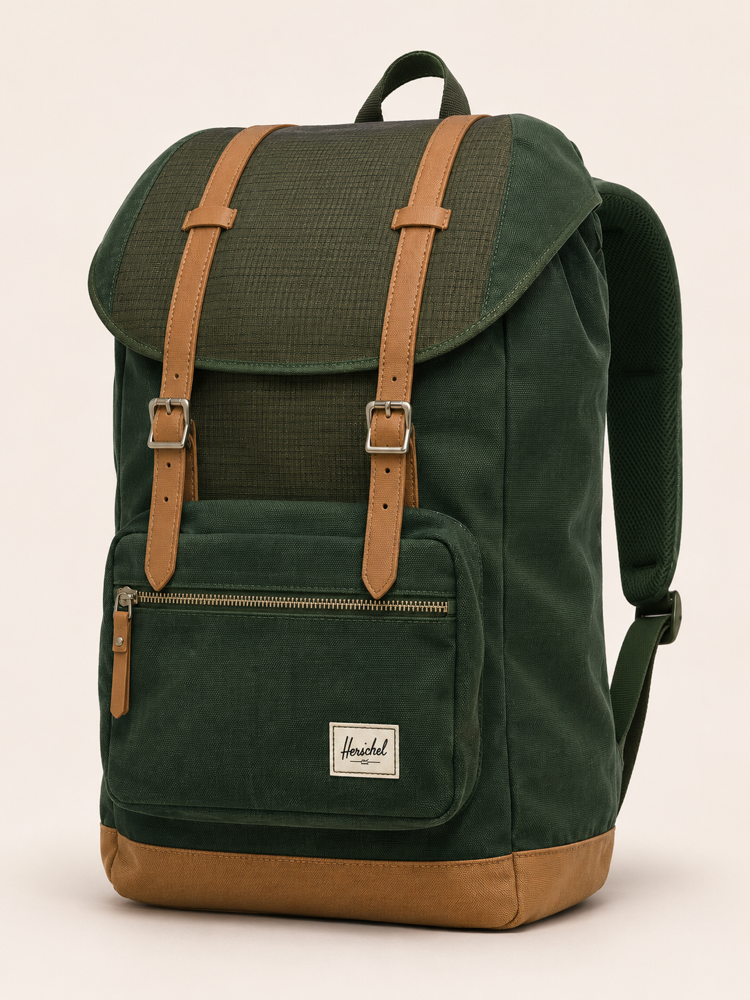

01 / COLLECT
Let the light in.
Miniature photovoltaic cells integrated into exposed textile panels would convert sunlight into electricity. No bulky external panel in this proposed design.

SOLAR TEXTILE CONCEPTConcept visualization · Materials and finishes illustrativeCarry your essentials. Collect a little extra energy along the way. Our solar textile concept reimagines the classic mountain backpack for days that take you beyond the outlet.
An independent student project inspired by Herschel. Not affiliated with or endorsed by Herschel Supply Company. Product features, colorways and price are proposed, not tested specifications.
From the morning commute to the trail home, the things we carry keep us connected. This concept explores a backpack that does more than hold them.
Solar collecting textiles capture sunlight during the day. A removable battery stores the collected energy for supplemental charging when an outlet is out of reach.
Miniature photovoltaic cells integrated into exposed textile panels would convert sunlight into electricity. No bulky external panel in this proposed design.
A charge controller would feed a removable battery module inside the bag. The module could be replaced or removed for servicing and care.
An internal USB-C connection would deliver supplemental power to compatible devices. Actual output would depend on sunlight, orientation, area and system efficiency.
Proposed woven solar collecting exterior panels, protective encapsulation, insulated conductive connections and a removable battery pocket. Exact textile composition and durability require development and testing.
Solar collection → charge controller → battery module → USB-C output. Battery capacity, charging rate, device compatibility and weather resistance have not been validated. This concept makes no full-phone-charge or laptop-charging promise.
Designed around removable electronics and serviceable components. Proposed care: remove the battery before cleaning. Final care instructions would require testing of the complete backpack.
A backpack already travels with your devices. This project explores integrating supplemental energy collection into an object people carry across work, travel and outdoor routines.
Nottingham Trent University · 2022
A woven prototype integrated 1,200 miniature photovoltaic cells.
Aalto University · 2021
Research explores hiding solar cells beneath a protective textile surface.
RIKEN · 2024
Waterproof, ultraflexible organic photovoltaic films suggest new routes for integration.